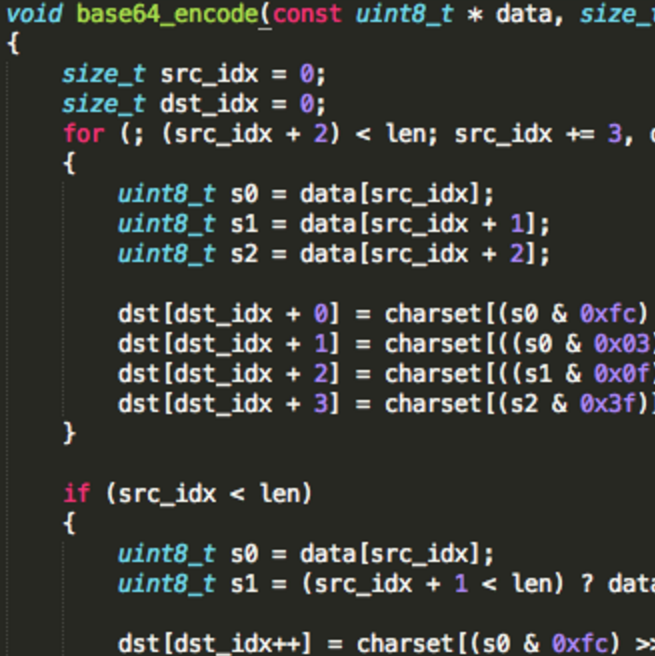

Alice Wu
I am a fourth year undergraduate, majoring in Computing Science at the University of Alberta.Professional Interests
To contribute my programming knowledge, problem-solving skills, and software designing skills to a company that are specializing in computer technology or requiring information technology support, while gaining experience during hands-on application.

Alfa Romeo Disco Volante
Personal Interests
Cars! Cars! And cars! Especially Italian makes! Lancia, Pagani Zonda, Abarth, etc.(No Lambo though, they are German's now.)
Highlights
Graduation
Expected Date:
Dec/2016
SOFTWARE DEVELOPER CO-OP, INTUIT CANADA; EDMONTON, AB
JAN 2015 -AUG 2016
- Participated in an android watch hackathon with team members, developed an android watch app, QuickTacts, that enables two people to exchange personal contact information through fist bumping. Mainly worked on designing and implementing backend services in node.js.
- Delivered QuickBooks Accountant (Canada, United Kingdom, Australia, and France) as a team.
- Developed strong customer empathy through Follow-Me-Home sessions, customer calls, and face-to-face conversations with customers.
- Recognized the importance of software quality through improving unit tests coverage, enforcing unit tests on new code, and working closely with Quality Analysts and Quality Engineers to execute manual tests, create, and improve automated tests.
- Gained full-stack experience while fixing bugs in both testing and production environments by either investigating, locating, and fixing the problematic code area (when code is available) or analyzing and deducting from available logs.
- Rebranded QuickBooks Online Accountant with new QuickBooks logos while working closely with nontechnical staff (designers, managers, etc) to obtain correct image resources, and with architects to deploy the image resource library to CDN servers.
DEVELOPER, WEB-BASED DATABASE APPLICATION: RADIOLOGY INFORMATION SYSTEM
2014
- Developed a web-based database application mainly in Java. Also with help of technologies like JSP to dynamically display information to users and JDBC to build connection and modify the information in the database.
- Utilized Apache Tomcat as web server.
- Basic HTML implementation.
- Designed the basic structure of relational database for Radiology Information System.
WEB INTERN, TOWN OF MUNDARE; MUNDARE, AB
MAY 2014 - DEC 2014
- Collaborated with executive team and staff to regularly update website content such as new posters, business opportunities, etc.
- Troubleshooted website related issues.
- Implemented CSS, JQuery to create photo slides.
- Documented diligently on developments or features through writing comments in code and providing instructional pdf on how to use these features for non-technical staff.
DEVELOPER, CHOOSE YOUR OWN ADVENTURE
SEPT 2013 - DEC 2013
- Developed an android application using Java with MVC design pattern.
- Refactored at completion of each stage by using JDeodorant.
- Practiced agile software development (e.g. having a stand up meeting with team members and manager weekly).
- Used UML for Object-Oriented Analysis.
- Android application development experience.
- Large scale web application development, single page application architecture, MV* frameworks, and services based software development experience.
- Highly motivated to work independently and effectively.
- Strong analytical and trouble shooting skills.
- Self-starter in learning a new language or a new application.
- Strong self-management ability to finish work in a timely manner.
- Ability to work with diverse teams and efficiently communicate with both technical and non-technical staff.
- Enrolled in university computing science program at the fourth year level
- Full commitment to working in a formal Quality Assurance environment.
- Technical skills: fluent in Java and Javascript; proficient in Python, CSS, SASS, HTML; familiar with SQL, C.